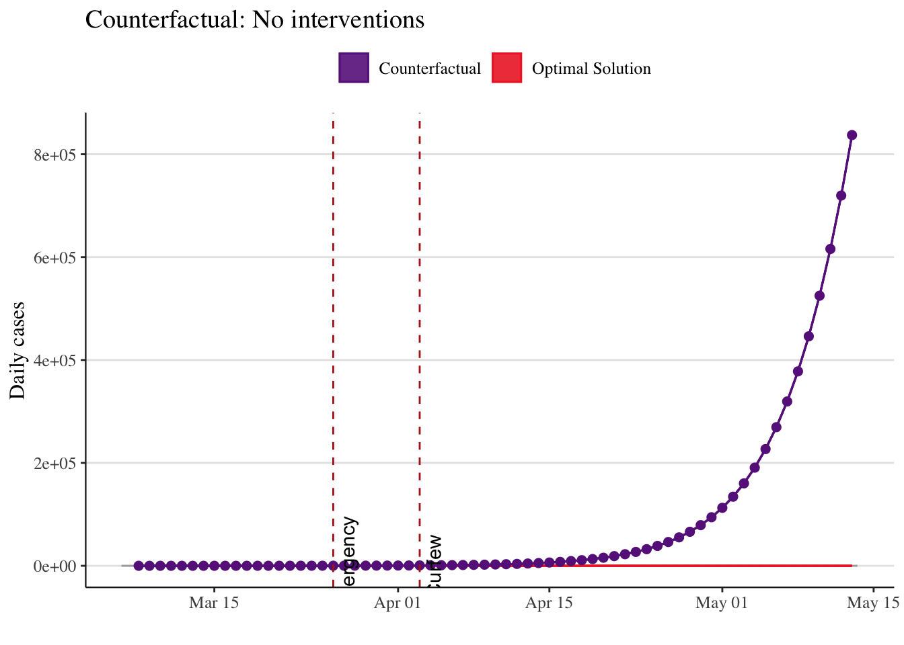
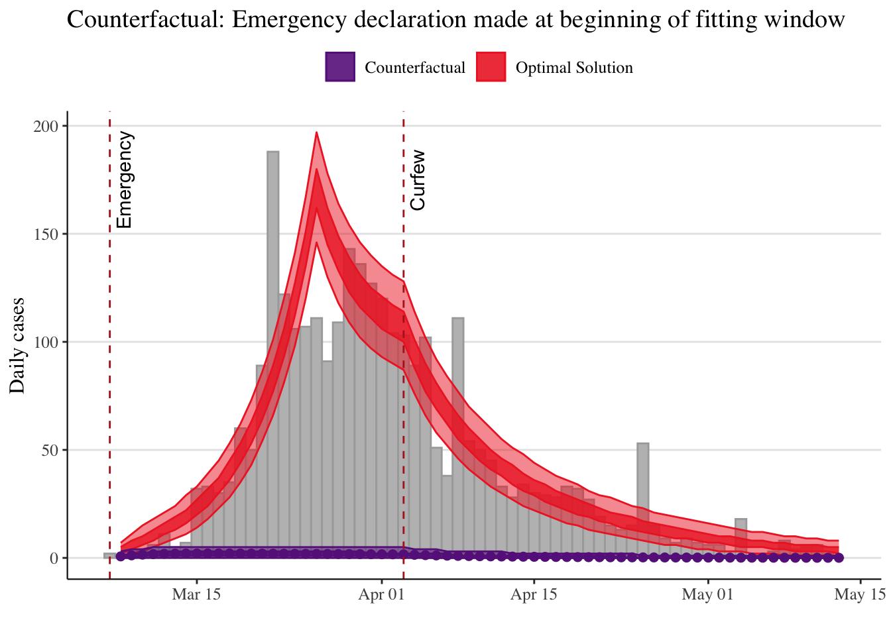
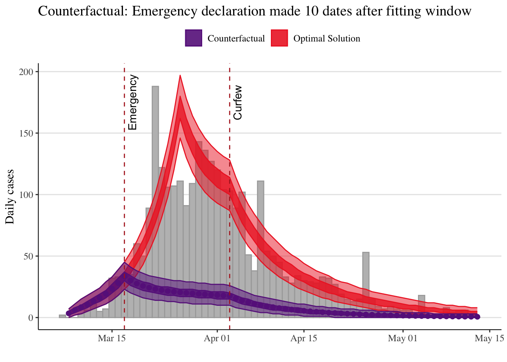
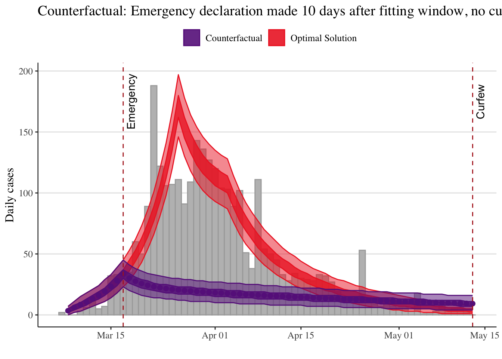
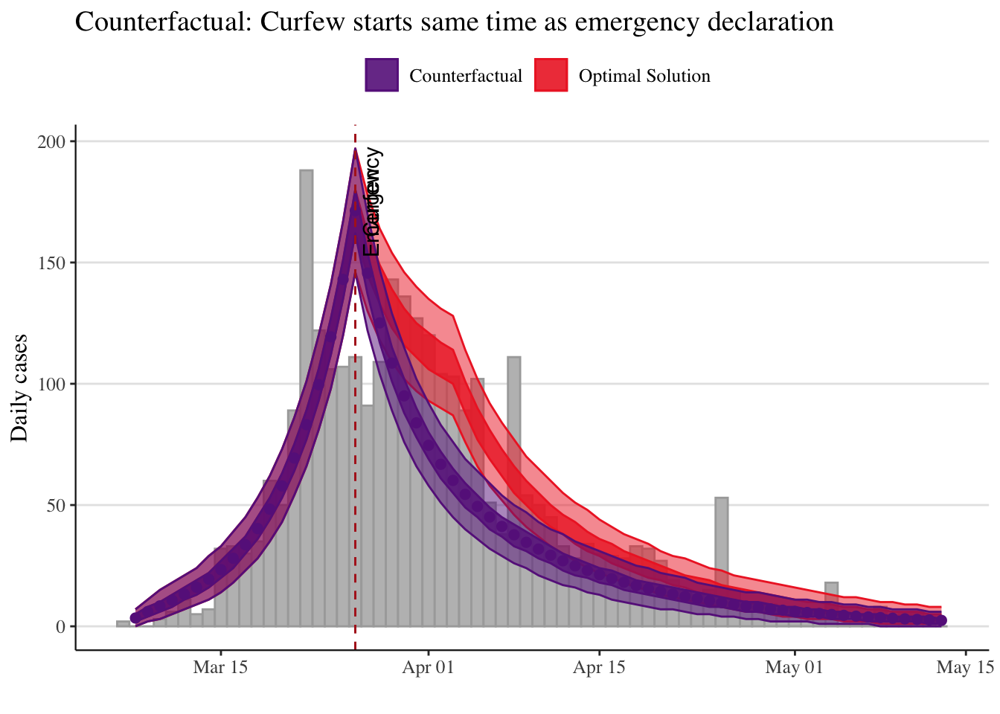

Modelling interventions in R
SPARKLE short course ‘Mathematical Modelling of Infectious Diseases’
Presenter: Michael Lydeamore, Monash University
Summary
One of the most useful aspects of a mathematical model for infectious disease transmission is its capability to explore future intervention scenarios: what could be.
We will explore some R code for the 1st wave of COVID-19 in Thailand in 2020. This will involve the following parts:
- A whiteboard discussion of how to include interventions in a model
- Coding a model to capture the 1st wave interventions (emergency stage and curfew stage)
- Estimating the effectiveness of the 1st wave interventions
- Exploring counterfactuals
- Practice building models to explicitly incorporate interventions of your choice in breakout groups
Modelling Interventions
As always, we should set up a new script with a good header:
# SPARKLE Modelling Short course
# 2025 Infectious Diseases Modelling
##################################
## MODELLING INTERVENTIONS IN R ##
##################################Save this file somewhere in your RStudio Project folder with a meaningful name, like session_seir_ode_covid.R.
Now, let’s load some packages.
if (!require(pacman)) install.packages("pacman")
library(pacman)
p_load(dplyr, deSolve, ggplot2)We’ll be making use of the first wave Thailand data. Here is a reminder of what the first wave in Thailand looked like:

Let’s load back in the data, and have a look at a plot:
first_wave <- read.csv("first_wave_TH.csv", colClasses = c("Date", "numeric", "numeric"))
first_wave$Date <- as.Date(first_wave$Date, format = "%Y-%m-%d")
ggplot(first_wave, aes(x = Date, y = Cases)) +
geom_col(fill = "blue") +
ylab("Daily cases") +
xlab("") +
ggtitle("Thailand's First Wave, Jan-Jun 2020") +
theme_bw()
Coding Interventions
We’re going to model two interventions: the emergency declaration, which was made on March 26, and the start of curfew, which was on April 3rd.
fitting_start_date <- as.Date("2020-03-07") # start of fitting window
emergency_start_date <- as.Date("2020-03-26") # Start of Emergency declaration
curfew_start_date <- as.Date("2020-04-03") # Start of Curfew
fitting_end_date <- as.Date("2020-05-13") # end of fitting windowWe should filter down our data to the time period we want to fit to.
outbreak <- first_wave %>%
filter(Date >= fitting_start_date, Date <= fitting_end_date)
# Visual check of the filtered outbreak data and intervention times
ggplot(outbreak, aes(x = Date, y = Cases)) +
geom_col(fill = "gray") +
ylab("Daily cases") +
xlab("") +
ggtitle("Filtered data from Thailand's First Wave, with intervention timings") +
theme_bw() +
geom_vline(xintercept = emergency_start_date, colour='firebrick',
linetype='dashed', size=1.3) +
geom_vline(xintercept = curfew_start_date, colour='firebrick',
linetype='dashed', size=1.3) +
annotate(
geom = "text",
label = c("lockdown", "Curfew"),
x = c(emergency_start_date, curfew_start_date),
y = c(175, 175),
angle = 90,
vjust = 1.5
)One of the most important things when you’re doing an optimisation is a decent initial guess at your parameter values. Luckily, in a previous session, we got a good estimate of R0, and we know a few things about how effective the various interventions might be.
parameters <- c(
R0 = 3.970588, # from the NM fitting session
latent_period = 5, # Rounded from Trauer, J.M., Lydeamore, M.J., Dalton, G.W. et al. Understanding how Victoria, Australia gained control of its second COVID-19 wave. Nat Commun 12, 6266 (2021). https://doi.org/10.1038/s41467-021-26558-4
infectious_period = 6, # Rounded from Trauer et al
emergency_efficacy = 0.70, # guess, assuming R_interventions = (1-efficacy) * R0
curfew_efficacy = 0.80 # guess
)Since we’re using the same model from Sessions 4 and 5, we also need the same initial conditions, state variables and time window.
# Initial conditions
Total_population <- 6.6e7 # Roughly population of Thailand
Initial_exposed <- 0 # Simplifying assumption
Initial_infectious <- 30.356868 # from the NM fitting session
Initial_recovered <- 0 # simplifying assumption
Initial_susceptible <- Total_population - Initial_exposed - Initial_infectious - Initial_recovered
# State variables
state <- c(
Susceptible = Initial_susceptible,
Exposed = Initial_exposed,
Infectious = Initial_infectious,
Recovered = Initial_recovered
)
# Time window
times <- seq(fitting_start_date, fitting_end_date, by = 1)We’re going to use a slightly different implementation of the SEIR model from the previous session. See if you can spot the differences.
COVID.intervention <- function(t, state, parameters) {
with(as.list(c(state, parameters)), {
# Calculate the total population size
Total_population <- Susceptible + Exposed + Infectious + Recovered
# Calculate intervention efficacy
if (t < as.numeric(emergency_start_date - fitting_start_date)) {
intervention_efficacy <- 0
} else if (t >= as.numeric(emergency_start_date - fitting_start_date) &&
t < as.numeric(curfew_start_date - fitting_start_date)) {
intervention_efficacy <- emergency_efficacy
} else {
intervention_efficacy <- curfew_efficacy
}
# Calculate the intervention reproduction number in the presence of interventions
R_interventions <- (1 - intervention_efficacy) * R0 # assuming everyone starts susceptible
# Calculate the average force of infection imposed on each susceptible individual
force_of_infection <- R_interventions * Infectious / (Total_population * infectious_period)
# Calculate the net (instantaneous) change in each state variable
Susceptible_change <- -force_of_infection * Susceptible
Exposed_change <- force_of_infection * Susceptible - Exposed / latent_period
Infectious_change <- Exposed / latent_period - Infectious / infectious_period
Recovered_change <- Infectious / infectious_period
# Return net changes as list
return(list(
c(
Susceptible_change,
Exposed_change,
Infectious_change,
Recovered_change
)
))
})
}What is different for this implementation compared to the implementation in session 4? Why?
Now, we wrap this function in a call to ode to solve our model, and give us the outputs we are interested in.
# Wrapper function to solve model and tidy up output
solve.intervention.model <- function(y_ = state,
times_ = times,
func. = COVID.intervention,
parms_ = parameters) {
out <- ode(
y = y_,
times = as.numeric(times_ - times_[1]),
func = func.,
parms = parms_
)
# Calculate the prevalence, incidence and cumulative incidence (for comparison with data)
out <- as.data.frame(out) %>%
mutate(
Incidence = Exposed * (1 / parms_["latent_period"]),
Cumulative_incidence = cumsum(Incidence) + Incidence[1],
Population = Susceptible + Exposed + Infectious + Recovered,
Prevalence = (Exposed + Infectious)/Population,
Date = times_
)
return(as.data.frame(out))
}We can solve this for our initial guess parameters, and see how it looks
# Run the model for out initial set of parameters
out_init <- solve.intervention.model()
# Make sure to add observational uncertainty
out_init <- out_init %>%
mutate(
lower50 = qpois(p = 0.25, lambda = Incidence), # 50% confidence interval (i.e., 25 - 75th centiles)
upper50 = qpois(p = 0.75, lambda = Incidence),
lower95 = qpois(p = 0.025, lambda = Incidence), # 95% confidence interval (i.e., 2.5 - 97.5th centiles)
upper95 = qpois(p = 0.975, lambda = Incidence)
)
# Plot initial estimate
ggplot(outbreak) +
geom_col(aes(x = Date, y = Cases), width = 1, fill = "gray", colour = "darkgray") +
geom_ribbon(
data = out_init[-1, ], aes(x = Date, ymin = lower50, ymax = upper50),
fill = "firebrick2", colour = "firebrick2", alpha = 0.8
) +
geom_ribbon(
data = out_init[-1, ], aes(x = Date, ymin = lower95, ymax = upper95),
fill = "firebrick2", colour = "firebrick2", alpha = 0.5
) +
ylab("Daily cases") +
xlab("") +
ggtitle("Thailand's First Wave, 2020") +
theme_bw()+
geom_vline(xintercept = emergency_start_date, colour='firebrick',
linetype='dashed', size=1) +
geom_vline(xintercept = curfew_start_date, colour='firebrick',
linetype='dashed', size=1) +
annotate(
geom = "text",
label = c("lockdown", "Curfew"),
x = c(emergency_start_date, curfew_start_date),
y = c(175, 175),
angle = 90,
vjust = 1.5
)
Not bad! What do you observe? Why do you think this might be, and how can the fit be improved?
Model calibration
So we have written code that can solve our model for a given set of parameters. Now, just like we did last time, we can use maximum likelihood estimation to determine the optimal parameters for our model.
And now we’re ready to write our negative log likelihood function.
negative.log.likelihood <- function(intervention_parameters,
data = outbreak$Cases[-1],
state_ = state,
times_ = times,
func. = COVID.intervention, # note this is our ode solver
parms_base = parameters) {
# Maybe change name of parms_base / parameters to be more descriptive
# Add in our fitting parameters to make sure they are updated
parms_base[c("emergency_efficacy", "curfew_efficacy")] <-
intervention_parameters[c("emergency_efficacy", "curfew_efficacy")]
# Solve model with updated parameters
out <- solve.intervention.model(
state_,
times_,
func.,
parms_base
)
return(-sum(dpois(
x = data,
lambda = out$Incidence[-1],
log = TRUE
))) # Poisson observation model
}Let’s make sure our function works:
init_parameters <- c(parameters[c(
"emergency_efficacy",
"curfew_efficacy"
)])
# Calculate initial negative log-likelihood
negative.log.likelihood(init_parameters)[1] 1865.599Optimisation algorithms by default will try any value for a parameter (i.e. \((-\infty, \infty)\)). We can specify bounds on the parameters we are interested in using the lower and upper arguments to optim().
Now we’re in a place to use optim again, just like we’ve done previously.
optim_NM <- optim(
par = init_parameters,
fn = negative.log.likelihood,
method = "L-BFGS-B",
lower = c(0, 0),
upper = c(1, 1),
hessian = TRUE
)
# Check for convergence
optim_NM$convergence # 0 - converged; nonzero - failed[1] 0# Optimal parameters:
optim_NM$par[c(
"emergency_efficacy",
"curfew_efficacy"
)]emergency_efficacy curfew_efficacy
0.7907728 0.9164655 # Inspect the optimal negative log-likelihood
optim_NM$value[1] 372.4239This is smaller than our initial value, because we are minimising the negative log likelihood.
It has decreased a lot, which is a good sign that we have found a better fit than our initial guess.
optimal_parameters <- parameters
optimal_parameters[c("emergency_efficacy", "curfew_efficacy")] <- optim_NM$par[c("emergency_efficacy","curfew_efficacy")]
# Solve the model given the optimal parameters and initial conditions
optimal_solution <- solve.intervention.model(
y_ = state,
times_ = times,
func. = COVID.intervention,
parms = optimal_parameters
)
# Calculate the observational confidence intervals
optimal_solution <- optimal_solution %>%
mutate(
lower50 = qpois(p = 0.25, lambda = Incidence), # 50% confidence interval (i.e., 25 - 75th centiles)
upper50 = qpois(p = 0.75, lambda = Incidence),
lower95 = qpois(p = 0.025, lambda = Incidence), # 95% confidence interval (i.e., 2.5 - 97.5th centiles)
upper95 = qpois(p = 0.975, lambda = Incidence)
)
ggplot(outbreak) +
geom_col(
aes(x = Date, y = Cases),
width = 1.0,
fill = "gray",
colour = "darkgray"
) +
geom_ribbon(
data = optimal_solution[-1, ],
aes(x = Date, ymin = lower50, ymax = upper50),
fill = "firebrick2", colour = "firebrick2", alpha = 0.8
) +
geom_ribbon(
data = optimal_solution[-1, ],
aes(x = Date, ymin = lower95, ymax = upper95),
fill = "firebrick2", colour = "firebrick2", alpha = 0.5
) +
ylab("Daily cases") +
xlab("") +
ggtitle("Intervention model fit (optimized)") +
geom_vline(
aes(xintercept = emergency_start_date),
linetype = "dashed", colour = "firebrick"
) +
geom_vline(
aes(xintercept = curfew_start_date),
linetype = "dashed", colour = "firebrick"
) +
annotate(
geom = "text",
label = c("lockdown", "Curfew"),
x = c(emergency_start_date, curfew_start_date),
y = c(175, 175),
angle = 90,
vjust = 1.5
) +
theme_bw()
Great! The fit looks reasonable, at least visually. To report on parameter uncertainty, we use the same method as last time, with the square root of the diagonals of the hessian matrix.
Counterfactuals example solution code
The solutions tab contains the complete code for the counterfactuals. Only click on it if you have tried to complete the exercises yourself and need some help
Your code to explore the counterfactuals might look like this:
# create a function to do the same steps over for us
scenario.exploration = function(lockdown_eff, curfew_eff, lockdown_start, curfew_start, plot_title){
new_params = parameters
new_params[c("lockdown_efficacy", "curfew_efficacy")] = c(lockdown_eff, curfew_eff)
new_solution <- solve.intervention.model(
y_ = state,
times_ = times,
func. = COVID.intervention,
parms = new_params
)
# Calculate the observational confidence intervals
observational_intervals <- new_solution %>%
mutate(
lower50 = qpois(p = 0.25, lambda = Incidence), # 50% confidence interval (i.e., 25 - 75th centiles)
upper50 = qpois(p = 0.75, lambda = Incidence),
lower95 = qpois(p = 0.025, lambda = Incidence), # 95% confidence interval (i.e., 2.5 - 97.5th centiles)
upper95 = qpois(p = 0.975, lambda = Incidence)
)
ggplot(outbreak) +
geom_col(
aes(x = Date, y = Cases),
width = 1.0,
fill = "gray",
colour = "darkgray"
) +
geom_ribbon(
data = observational_intervals[-1, ],
aes(x = Date, ymin = lower50, ymax = upper50),
fill = "darkorchid4", colour = "darkorchid4", alpha = 0.8
) +
geom_ribbon(
data = observational_intervals[-1, ],
aes(x = Date, ymin = lower95, ymax = upper95),
fill = "darkorchid4", colour = "darkorchid4", alpha = 0.5
) +
#geom_point(data=optim_solution[-1,], aes(x=Date, y=Incidence), size=2, colour="firebrick2") +
geom_point(data=new_solution[-1,], aes(x=Date, y=Incidence), size=2, colour="darkorchid4") +
ylab("Daily cases") +
xlab("") +
ggtitle(plot_title) +
geom_vline(
aes(xintercept = lockdown_start),
linetype = "dashed", colour = "firebrick"
) +
geom_vline(
aes(xintercept = curfew_start),
linetype = "dashed", colour = "firebrick"
) +
annotate(
geom = "text",
label = c("lockdown", "Curfew"),
x = c(lockdown_start, curfew_start),
y = c(175, 175),
angle = 90,
vjust = 1.5
) +
theme(panel.background = element_rect(fill = "white", colour = "white"),
panel.grid.major = element_line(colour = "grey90"),
panel.grid.major.x = element_blank(),
axis.line = element_line(size = 0.4, colour = "grey10"),
text = element_text(size=12, family="serif"),
legend.key = element_rect(fill = "white", colour = "white"),
legend.position = "top",
strip.background =element_rect(fill="royalblue"),
strip.text = element_text(size = 10, colour = 'white'))
}
### No intervention ###
scenario.exploration(lockdown_eff=0, curfew_eff=0,
lockdown_start=emergency_start_date,
curfew_start=curfew_start_date,
plot_title="Counterfactual: No interventions")
### What could have happened if we the emergency declaration made earlier? ###
# Store original values
emergency_start_date_orig = emergency_start_date
curfew_start_date_orig = curfew_start_date
# set new values
emergency_start_date <- fitting_start_date # fitting start date
scenario.exploration(lockdown_eff=optimal_parameters["emergency_efficacy"],
curfew_eff=optimal_parameters["curfew_efficacy"],
lockdown_start=emergency_start_date,
curfew_start=curfew_start_date,
plot_title="Counterfactual: Emergency declaration made at beginning of fitting window")
# set new values
emergency_start_date <- fitting_start_date + 10 # 10 days after fitting start date
scenario.exploration(lockdown_eff=optimal_parameters["emergency_efficacy"],
curfew_eff=optimal_parameters["curfew_efficacy"],
lockdown_start=emergency_start_date,
curfew_start=curfew_start_date,
plot_title="Counterfactual: Emergency declaration made 10 dates after fitting window")
# now make it so no curfew in this scenario
curfew_start_date <- fitting_end_date
scenario.exploration(lockdown_eff=optimal_parameters["emergency_efficacy"],
curfew_eff=optimal_parameters["curfew_efficacy"],
lockdown_start=emergency_start_date,
curfew_start=curfew_start_date,
plot_title="Counterfactual: Emergency declaration made 10 days after fitting window, no curfew")
### Curfew starts at same time as state of emergency declared ###
emergency_start_date <- emergency_start_date_orig
curfew_start_date <- emergency_start_date
scenario.exploration(lockdown_eff=optimal_parameters["emergency_efficacy"],
curfew_eff=optimal_parameters["curfew_efficacy"],
lockdown_start=emergency_start_date,
curfew_start=curfew_start_date,
plot_title="Counterfactual: Curfew starts same time as emergency declaration")
Contributors
- Lisa White, Nuffield Department of Medicine, Oxford University
- Michael Meehan, Australian Institute of Tropical Health & Medicine, James Cook University
- Wirichada Pan-Ngum, Department of Tropical Hygiene, Faculty of Tropical Medicine, Mahidol University